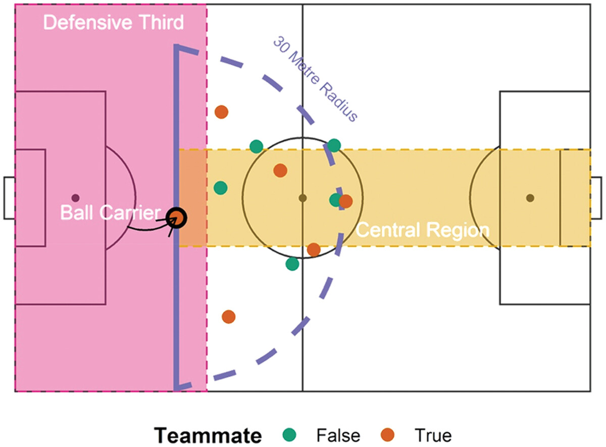
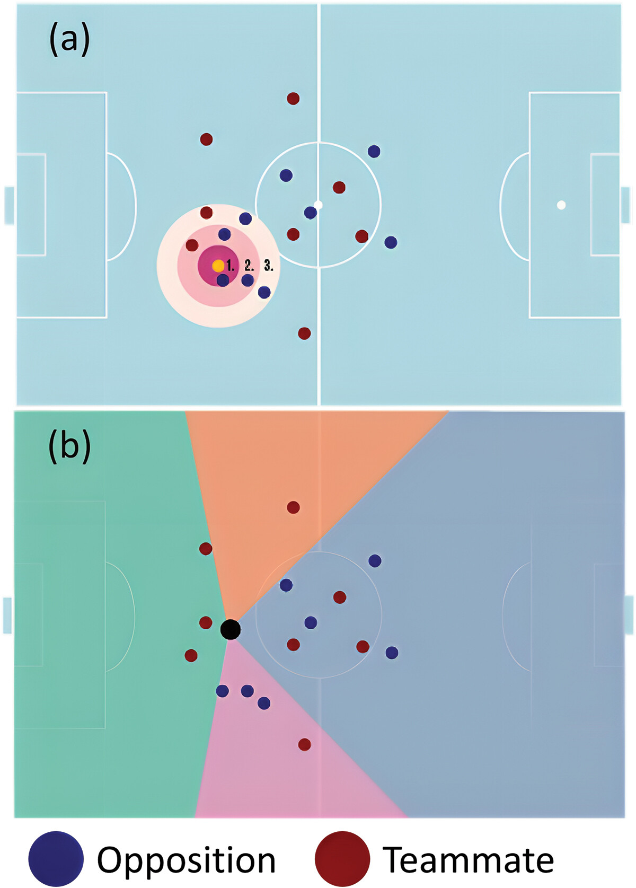
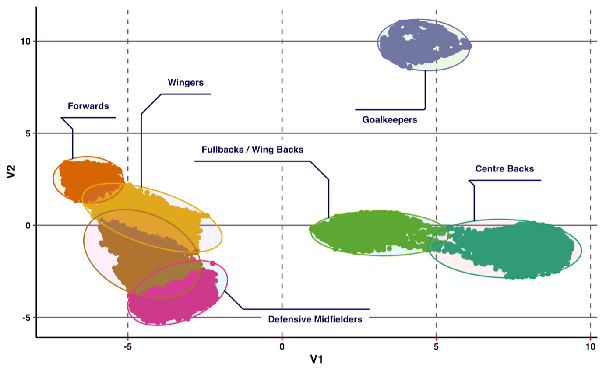
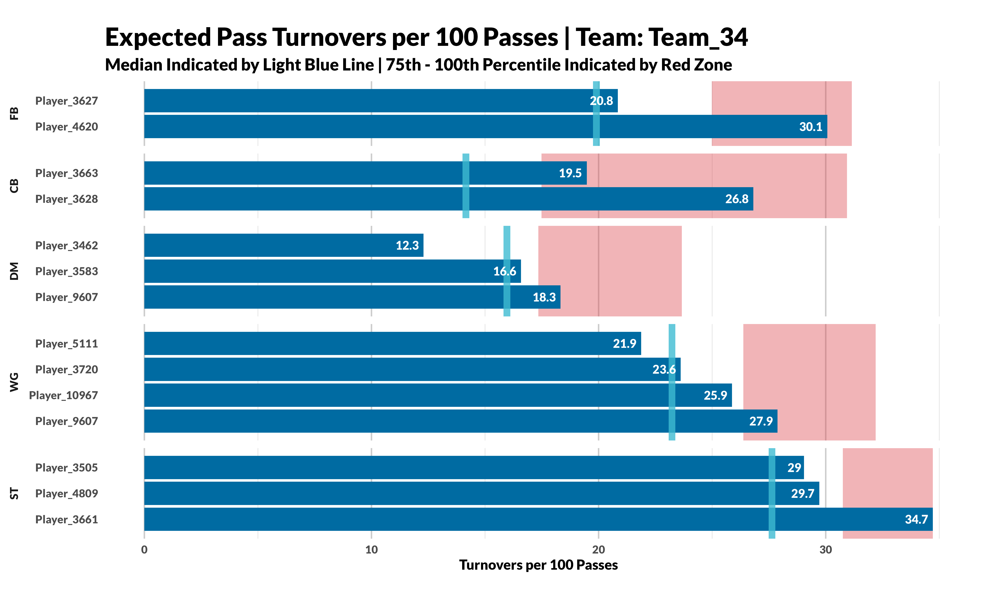
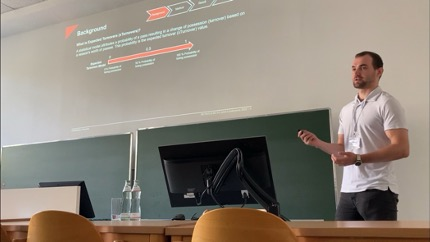
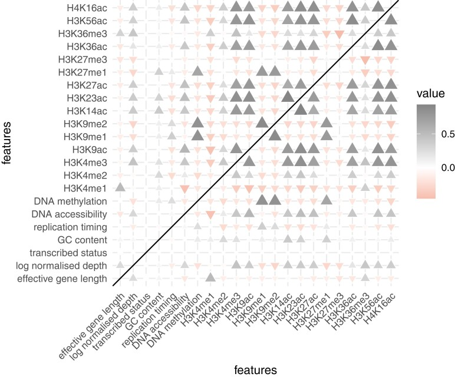

Football Analytics
I was fortunate enough to work for Leicester City Football club for 3 years. (→ Professional Experience)
During this time, I was involved in managing back-end and front-end operations for analytics initiatives across the Performance Analysis, Sports Science and Recruitment Departments. I delivered frequent RMarkdown & PDF reports and deployed RShiny & Tableau dashboards acorss all of these departments.
In addition, I investigated the relationship between Rest Defence and Counterpressing (1. Counterpressing in Football); developed machine learning methods to analyse passing events (2. Modelling Passing in Football); used a semi-supervised machine learning method to characterise pressing roles in football (3. Defining Pressing Roles in Football); applied pass models to demonstrate their applications within a professional football environment (4. Applying an Expected Pass Turnovers Model to Inform Pressing Strategies in Professional Football)
📚 Publications & Research
This project highlights my research work in football (soccer) analytics, combining machine learning, modelling and data storytelling to provide actionable insights for practitioner coaches and analysts.
Studies below have been peer-reviewed and published in leading sports science journals.
🔄 1. Counterpressing in Football
International Journal of Performance Analysis in Sport (2025)
A rule-based approach to classify counterpressing – analysis of its risks and relationship with rest defence.
Summary:
Defensive Transition was be assessed by measuring counterpressure success against instances of shot and territory (counter-attack) concession.
The number of players occupying the Rest Defence zone was found to have a significant relationship with shot concession (p < 0.05) and territory concession (p < 0.001) following possession loss in the opposition’s final third.

⚽️ 2. Modelling Passing in Football
Journal of Sport Sciences (2024)
Expected Pass Turnovers (xPT) - a machine learning approach to analyse turnovers from passing events in football
Summary:
The aim of this study was to create a novel metric, Expected Pass Turnovers (xPT), that could evaluate possession retention from player-passing events in football.
A logistic mixed-effects model was implemented to attribute the probability of each pass getting turned over. The use of positional data enabled the identification of a) opposition players present in radii surrounding the ball carrier and b) availability of teammates with respect to the ball carrier.

📊 3. Defining Pressing Roles in Football
International Journal of Computer Science in Sport (2025)
A semi-supervised machine learning approach to identifying and comparing pressing roles beyond traditional positional labels.
Summary: This study proposed a data-driven framework using Shapley values, dimensionality reduction (UMAP), and clustering to objectively classify pressing roles in football.
The approach enables:
- Identification of distinct pressing profiles
- Similarity searches between players
- Longitudinal analysis of how pressing roles evolve over time
The framework has direct applications in performance analysis, tactical profiling, and player recruitment.

### 🧠 4. Applying an Expected Pass Turnovers Model to Inform Pressing Strategies in Professional Football {#applications-id} International Journal of Performance Analysis in Sport (2026)Applying an Expected Pass Turnovers model to inform pressing strategies in professional football.
Summary: This study extends the original Expected Pass Turnovers (xPT) framework by showing how it can be used not only to assess passing risk, but also to inform pressing strategy in professional football.
The model identifies:
- Players and positions that may be suitable pressing targets,
- Spatial zones where teams are most vulnerable to turnover,
- Defensive players who force turnovers more effectively than expected through a complementary metric, Expected Pass Turnovers Forced (xPTF).
A key contribution of the paper is that the full pipeline is fully reproducible, with code made openly available for practitioners, analysts, and researchers to adapt and apply in their own workflows.

🎤 Conference Presentation
I presented “A Machine Learning Approach to Identify Pressing Targets in Football” at the 13th World Congress of Performance Analysis of Sport (2022).
The talk demonstrated how a machine learning appraoch, that leveraged positional data and visualisation techniques, can help identify pressing triggers and target patterns.
This presentation showcased how applied data science methods can translate directly into actionable insights for elite sports environments.

💡 Insights and Broader Impact
- Data visualisation enables coaches to interpret tactical models quickly and intuitively.
- The combination of spatial and event data will always create models of greater accuracy.
🔬 Other Publications
🧬 Inferring Somatic Mutations from RNA-Seq Data
Genetics (2023)
Somatic mutations inferred from RNA-seq data highlight the contribution of replication timing to mutation rate variation in a model plant.
Summary: Variation in the rates and characteristics of germline and somatic mutations across the genome of an organism is informative about DNA damage and repair processes and can also shed light on aspects of organism physiology and evolution.
The wide range of genomic data types available for A. thaliana enabled us to investigate the relationships of multiple genomic features with the variation in the somatic mutation rate across the genome of this model plant.
We observed that late replicated regions showed evidence of an elevated rate of somatic mutation compared to genomic regions that are replicated early. We identified transcriptional strand asymmetries, consistent with the effects of transcription-coupled damage and/or repair.
